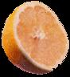

True Brew: Drink Tea For Your Health
Steep a cup of tea ... for the health of it.
By Marguerite Lamb
December/January 2000
It's a wintry afternoon and you've just come in from your favorite fishing hole, where the only thing biting is the wind. Chilled to the bone, you need something to warm you from the inside out. But before lunging for the coffee or the Swiss Miss, know this: There's a hot, soothing beverage that has half the caffeine of coffee, none of the sugar of cocoa, and may help to ward off cancer, heart attack, stroke - even tooth decay. Of course, we're talking about tea - black, green or oolong.
SAME LEAF, DIFFERENT TEA
Black, green and oolong teas all begin with the leaves of the same white-flowered evergreen, Camellia sinensis. The difference is in the processing: Black tea leaves are fermented fully, oolong partially and green not at all.
Black tea leaves are further sorted and graded according to size. The largest, best-quality whole leaves are labeled orange pekoe, followed by pekoe and pekoe souchang. (Note that "orange" refers to size and quality, not flavor.) Smaller or crushed leaves are classified as broken orange pekoe, broken pekoe, fannings or dust. Most of the bagged teas sold in the U.S. contain these black tea bits; they're used in popular blends such as English and Irish Breakfast teas, as well as in scented and spiced varieties (not to be confused with herbals; see " If It's Herbal, It Ain't Tea ") such as jasmine and Earl Grey. Though green tea has of late gained ground in the West, black still reigns as America's favorite tea, accounting for a full 95% of all that we drink. But whether your cup of tea is black or green, whole-leaf or bagged bits, recent studies suggest that tea is not only good, but good for you.
IT'S ALL IN THE ANTIOXIDANTS
For years scientists have been singing the praises of antioxidants, powerful dietary compounds that work in our bodies to neutralize free radicals (reactive oxygen molecules) before they can oxidize, or "rust," healthy cells and contribute to aging, heart dis ease, cancer and more. Among the more championed antioxidants are vitamins C, E and beta carotene, but these "supernutrients" don't battle alone. The plant kingdom, scientists are learning, offers a vast menu of antioxidants, including a group of potent compounds called flavonoids, found in many fruits and vegetables as well as in green and black tea. "Tea contains several dozen flavonoid compounds," notes Jeffrey Blumberg, chief of the antioxidants research laboratory at the Human Nutrition Research Center on Aging at Tufts University. "Two cups of tea gives you about the equivalent amount of flavonoids as a typical serving of vegetables."
But don't pass on the broccoli just yet, cautions Blumberg. For while your favorite Darjeeling may give you the same amount of flavonoids as a side of broccoli, it doesn't necessarily provide the same type. "You can't simply substitute the antioxidants of tea for the antioxidants of vegetables," says Blumberg, who stresses that a "network of antioxidants" is essential to good health.
If It's Herbal, It Ain't Tea
Don't let true tea connoisseurs catch you calling your favorite hot chamomile drink "tea." Technically, tea refers only to beverages brewed from the dried leaves of the Camellia sinensis plant. SSticklers will insist that all brews derived from the flowers, leaves or roots of other plants be called herbal "infusions" or tisanes (the French word for herbal beverages). While many herbal infusions tout their own health benefits (peppermint fights indigestion, ginger relieves nausea, chamomile calms the nerves), only "real" teas are known to contain catechins, the potent plant compounds that may help ward off cancer and heart disease.
Tea and Iron
TEA FOR YOUR TICKER
The oxidation of low-density lipoproteins (LDL, or "bad" cholesterol) in the blood is believed to be a chief cause of atherosclerosis, a thickening of arterial walls that can lead to heart attack or stroke. Antioxidants can help to prevent the oxidation of LDL, thereby reducing the risk of cardiovascular disease. And no brand of antioxidant may be more powerful in this regard than catechins, a type of flavonoid prevalent in tea.
Indeed, in a study conducted by Scranton University chemistry professor Joe Vinson, tea catechins proved ten times more effective than vitamins C, E and beta carotene at stopping the oxidation of LDL in a test tube. Vinson further found that black and green tea inhibited atherosclerosis in hamsters fed a high-fat, high-cholesterol diet - the more the hamsters drank, the better the results. In high doses, tea even lowered the animals' LDL, total cholesterol and triglycerides (yet another type of fat released into the bloodstream through the digestion of fatty foods). Good news for ill-fed hamsters, no doubt, but what about the rest of us?
It has yet to be shown that tea actually lowers cholesterol in people, notes Vinson. But recent studies examining the link between the consumption of tea and heart health are intriguing. A 1998 Harvard University study found that just one or two cups of black tea a day may reduce the risk of heart attack by 44%.
Similarly, Dutch researchers who tracked 3,454 people over 55 found that those who drank one to two cups of tea daily had a 46% lower risk of developing severe aortic atherosclerosis than nonconsumers, while people who drank four or more cups daily reduced their risk by 69%.
The next step, says Vinson, needs to be a long-term tea study involving people at risk for heart disease. "We're still waiting for this last link in the puzzle," he says. "But I think drinking tea will prove to be preventive for heart disease in the long run."
Caffeine Count
The Benefit, Without the Buzz
CANCER Rx
Black and green tea catechins have also been shown to block the formation or slow the growth of tumors in laboratory animals. "Tea has proven remarkably successful at decreasing carcinogenesis in animal studies," notes Blumberg, who calls the results "consistent, compelling and strong."
But what, finally, do the results tell us? "Tea is an excellent drink for rats," quips Blumberg, who admits that animal studies don't always extrapolate to humans the way researchers would hope. Still, he says, the animal studies do give scientists good reason to look seriously at tea as a possible cancer preventative or therapy. "And so far," he acknowledges, "the human data is provocative."
A University of Minnesota study involving 35,369 postmenopausal women found that those who drank two or more cups of tea daily had a 60% lower incidence of urinary tract cancers and a 32 percent lower incidence of gastrointestinal cancers. Chinese researchers recently re ported that a combination of green and black tea - applied topically and ingested - significantly inhibited the spread of precancerous cells in the mouth. In addition, scientists at the Indiana University School of Medicine found a correlation between green and black tea consumption and the slowed growth of lung cancers.
Additional studies suggest that tea may help to halt cancers of the breast, liver, pancreas, stomach and colon. There's even some evidence that topical application of green tea may ward off skin cancers by minimizing the damage caused by UV rays. "Tea is not going to be a panacea," says Blumberg, noting that cancer indeed strikes in tea-drinking countries like England and Japan. "But it can contribute to a healthy diet, along with fruits, vegetables and grains."
TEA AND TEETH
Another good reason for tea-drinkers to smile? Their beverage of choice contains fluoride, a mineral that strengthens tooth enamel and guards against decay. Studies also show that tea may reduce dental plaque and bacteria in the mouth, thereby helping to prevent cavities and gum disease. Green tea contains a bit more fluoride than black, but a few cups a day of either may help to save you from the dentist's drill. "It's important to choose a healthy diet, and that includes beverages," says Blumberg, noting that Americans tend to opt for drinks with no nutritional value. "If it's a choice between soda pop or [freshly brewed] iced tea - and you're looking for the healthful choice - it's a no-brainer."
|
|
|
 |
 |
|
|